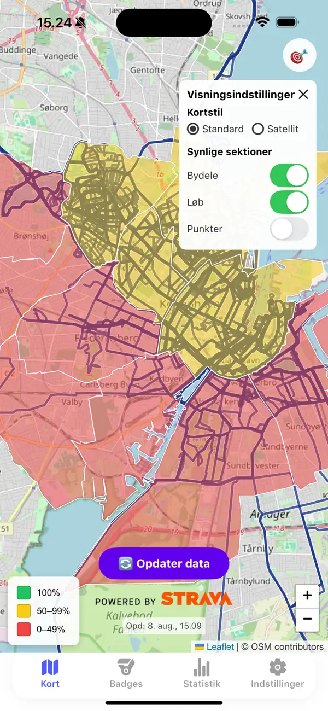
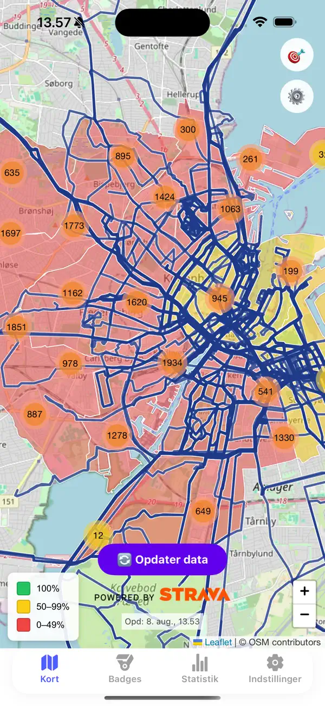
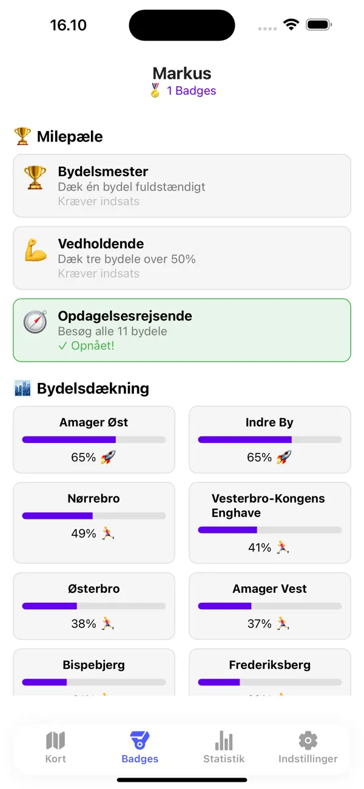
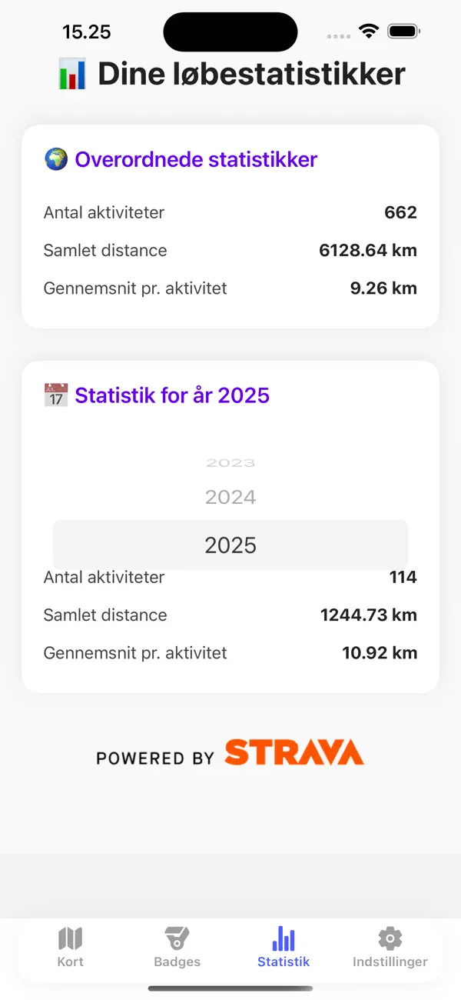

01
Forbind Strava
Dine løbe-, gå-, hike- og cykelture med GPS bliver hentet ind og lagt på dit personlige kort.
Dine ture. Dit kort. Nye steder.
Footprints samler dine Strava-ruter på ét levende dækningskort. Se dine fremskridt, find nye gader at løbe, og oplev Danmark én vej ad gangen.
Til iPhone · Forbundet med Strava

Sådan virker det
Footprints ændrer ikke måden, du registrerer dine ture på. Appen giver bare alle de kilometer, du allerede samler, en ny mening.
Dine løbe-, gå-, hike- og cykelture med GPS bliver hentet ind og lagt på dit personlige kort.
Ruterne sammenlignes med punkter fra OpenStreetMap, så din dækning vokser de steder, du faktisk har været.
Orange punkter viser, hvad du mangler. Du vælger selv ruten og rækkefølgen—målet er at opdage noget nyt.
Se Footprints i praksis
Rigtige screenshots fra appen viser, hvordan dine Strava-aktiviteter bliver til et samlet kort, konkrete dækningsmål og statistik over dine ture.

Få overblik over dækkede områder og de steder, der stadig venter.

Se dine procenter, gennemfør opdagelsesmål og lås badges op undervejs.

Saml antal aktiviteter, distance og gennemsnit i et enkelt års- og totaloverblik.
Tre måder at se fremskridt
Det samme løb kan flytte flere slags dækning. Skift mellem tre lag og se, hvordan hver lille afstikker bliver en del af et større kort.
Følg din procent i bydele som Nørrebro, Østerbro og Amager Vest—og se præcis, hvor der stadig er veje at opdage.
Sognene giver dig tusindvis af lokale områder at udforske og gør både hverdagsruten og ferieturen til en del af det samme mål.
Følg din dækning på tværs af Danmark i postnummerområder, der er samlet og tegnet, så de giver mening på et løbekort.
Hvorfor Footprints?
Se huller i dit kort og lad dem inspirere den næste lille afstikker.
Procenter, historik og badges gør indsatsen konkret—også på de rolige ture.
En ukendt sidevej kan være alt, der skal til for at opdage et nyt hjørne af byen.
Ofte stillede spørgsmål
Mangler du noget? Skriv til gustav.manthorpe@gmail.com.
Ja. Footprints bruger Strava til at hente de aktiviteter, der danner dit kort. Du forbinder kontoen sikkert i appen og kan afbryde forbindelsen igen.
Nej. Du kan følge bydele i København samt sogne og meningsfulde postnummerområder i hele Danmark.
De viser steder, du endnu ikke har dækket. Du vælger selv, hvilke punkter du vil opsøge, hvilken rute du tager, og i hvilken rækkefølge.
Din GPS-rute sammenlignes med relevante vej- og stipunkter fra OpenStreetMap. Når ruten kommer tæt på et punkt, tæller det som besøgt i de områder, punktet tilhører.
Din næste tur starter her
Forbind Strava, se dit aftryk, og find det næste sted, du aldrig har været.
Hent iApp Store